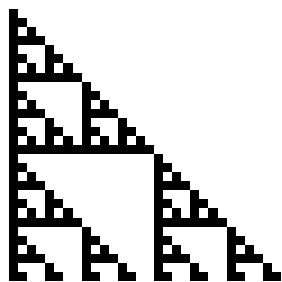
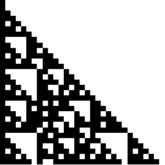
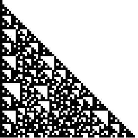
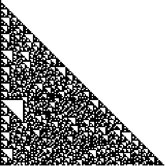
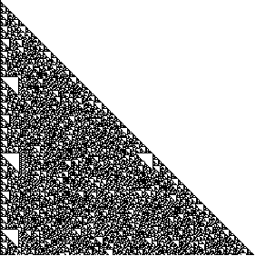

4. Here are the Pascal's triangles for D3. with b along the left side and d along the right side. We shade the boxes containing
| left and right | b, d | b, d | b, e | b, f |
|
|
 | ||
| shading | a,b,c | d,e,f | d,e,f | d,e,f |
Note a rotation and any of the reflections generates the same pattern.
Here are larger and larger Pascal's triangles, with c on the left and f on the right, shading the boxes containing b, c, d, or e. Vote this resembles a Class 4 automaton. Click the lest three to enlarge in new windows.
|  |  |  |  |
Return to Finite groups Exercises.